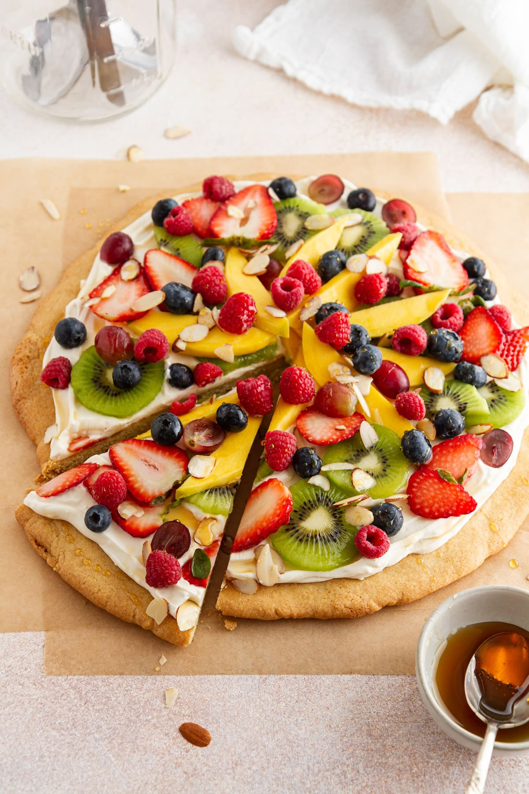

Fruit Pizza

This is a paragragh about fruit pizza
Ingredients
- Fruit
- Butter
- Cream Cheese
- Sugar
- Cookie Dough
- Vanilla Extract
Directions
- Mix butter, sugar, cream cheese, and extract
- Make cookie into crust
- Bake cookie til golden brown
- Take out, let cool then spread cream cheese mixture on it
- Place in fridge to chill